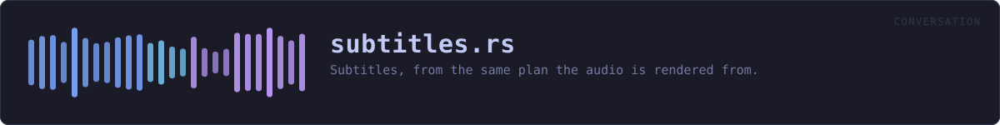

crates/veilvoice-conversation/src/subtitles.rs
veilvoice-conversation · 276 lines · read the source here · or on GitHub
Subtitles, from the same plan the audio is rendered from.
Two formats, both written out here
WebVTT is what a browser plays alongside a <video>, and it is the one to use with anything this project renders. SubRip (.srt) is what every other player on earth reads. They differ in three small ways, being a header, a cue counter, and a comma instead of a full stop in the timestamp, so both come from one function with a flag rather than from two that drift.
No library. The workspace carries no subtitle crate and this is forty lines; adding a dependency to the graph for it would cost more than it saves, and the offline CI job that checks what is in that graph is one of the things this project is worth trusting for.
What goes in a cue when nobody wrote down the words
VeilVoice does not transcribe. Where a turn has no text, the cue carries the speaker's name and nothing else, which is still worth having: after every voice has been replaced, a caption track saying who is talking is often the only way to follow a recording at all.
A name in a caption is not veiled
Worth saying twice, because it is the mistake this feature invites. The audio has had its voiceprints destroyed. The subtitle file is a text file containing whatever names were typed into it, sitting next to the recording. If the names matter, use labels rather than names, because the plan does not care which, and crate::SCOPE says so where a user will read it.
In plain words
Writes the subtitles, from the same plan the audio came from.
Both files come out of one source, so the words on screen and the voice you hear cannot drift apart or disagree about who is speaking.
Two formats are written: the one browsers use for video on a web page, and the older one nearly every video player and editor understands.
The names in the subtitles are the ones you typed. Nothing veils those, and the application says so where you type them.
WHAT THIS FILE CONTAINS
276 lines defining 4 functions (2 public), 1 type and 0 constants. Everything below is read out of the source, so it cannot disagree with the code.
The types it owns.
enum Formatline 49 · Which subtitle format to write.
What happens when it runs. These are the ways in: public, and nothing else in this file calls them, so they are what an outside caller reaches first.
Format::extensionline 59 · The conventional file extension, without the dot.writeline 90 · Render the plan as subtitles.
reachesone_line,timestamp
WHAT CALLS WHAT
The functions this file defines, and the calls between them. An edge means the callee's name appears, called, inside the caller's body. This is a syntactic reading, not a type-resolved one.
The same graph as Mermaid source
%%{init: {"theme":"base","themeVariables":{"background":"#1a1b26","primaryColor":"#1f2335","primaryTextColor":"#c0caf5","primaryBorderColor":"#7aa2f7","secondaryColor":"#16161e","tertiaryColor":"#16161e","lineColor":"#737aa2","textColor":"#c0caf5","mainBkg":"#1f2335","nodeBorder":"#7aa2f7","clusterBkg":"#16161e","clusterBorder":"#2f3549","fontFamily":"ui-monospace, SFMono-Regular, Consolas, monospace","fontSize":"14px"}}}%%
flowchart TD
n_extension(["Format::extension<br/>line 59"])
n_timestamp["timestamp<br/>line 73"]
n_write(["write<br/>line 90"])
n_one_line["one_line<br/>line 135"]
n_write --> n_one_line
n_write --> n_timestamp
click n_extension href "https://github.com/tilas01/veilvoice/blob/main/crates/veilvoice-conversation/src/subtitles.rs#L59" "open the source"
click n_timestamp href "https://github.com/tilas01/veilvoice/blob/main/crates/veilvoice-conversation/src/subtitles.rs#L73" "open the source"
click n_write href "https://github.com/tilas01/veilvoice/blob/main/crates/veilvoice-conversation/src/subtitles.rs#L90" "open the source"
click n_one_line href "https://github.com/tilas01/veilvoice/blob/main/crates/veilvoice-conversation/src/subtitles.rs#L135" "open the source"
classDef entry fill:#1f2335,stroke:#7aa2f7,color:#c0caf5
class n_extension,n_write entry
classDef helper fill:#1f2335,stroke:#bb9af7,color:#c0caf5
class n_timestamp,n_one_line helperThis site loads no third-party script, so it cannot run Mermaid; the diagram above is the same nodes and edges drawn by the generator instead. GitHub renders the source below directly.
ITEMS
| Item | Line | Documentation |
|---|---|---|
Format pub enum | 49 | Which subtitle format to write. |
Format::extension pub fn | 59 | The conventional file extension, without the dot. |
timestamp fn | 73 | A timestamp as the subtitle formats want it: HH:MM:SS.mmm. |
write pub fn | 90 | Render the plan as subtitles. |
one_line fn | 135 | Flatten anything that would break a cue into one line. |